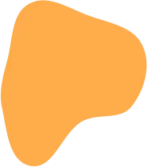
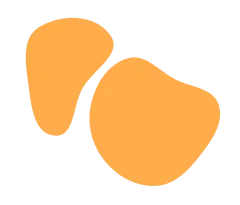
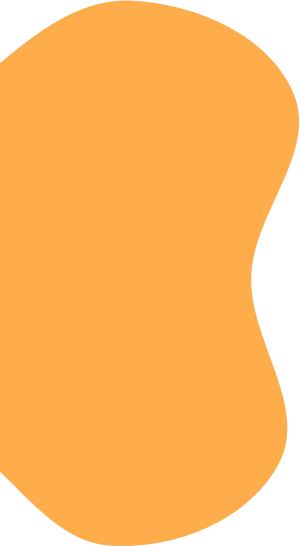
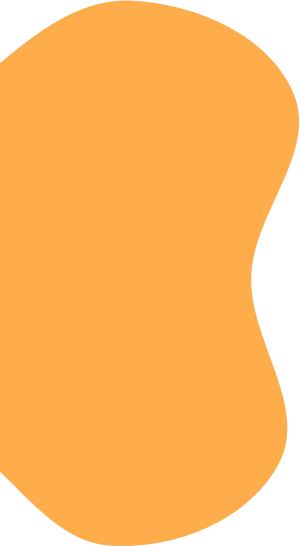
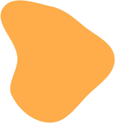
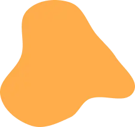
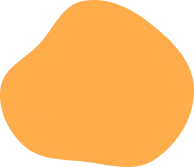

КОПОЛЕВА
я помогаю 
программу курса 
КУРСЫ КИСЛОТНОСТЬ ЖЕЛУДКА + ДЕТОКСИКАЦИЯ ПЕЧЕНИ + ЖЕЛЧЕОТТОК + ЛИМФАТИЧЕСКАЯ СИСТЕМА
Три очень взаимосвязанных процесса, поэтому работать над ними лучше сообща.
Вам подойдет этот курс, если:
КОМПЛЕКСНЫЙ КУРС ПО ВОССТАНОВЛЕНИЮ МИКРОФЛОРЫ КИШЕЧНИКА
КУРСЫ КИСЛОТНОСТЬ ЖЕЛУДКА + ДЕТОКСИКАЦИЯ ПЕЧЕНИ + ЖЕЛЧЕОТТОК + ЛИМФАТИЧЕСКАЯ СИСТЕМА
Три очень взаимосвязанных процесса, поэтому работать над ними лучше сообща.
Вам подойдет этот курс, если:
КОМПЛЕКСНЫЙ КУРС ПО ВОССТАНОВЛЕНИЮ МИКРОФЛОРЫ КИШЕЧНИКА
3 записи уроков по медитациям, которые помогут успокоиться в стрессовой ситуации. 1 короткий урок и два более глубокой проработки.
Вопросы проработки стресса ОЧЕНЬ ВАЖНЫ в вопросах восстановления работы пищеварения и гормональной системы. На фоне хронического стресса, любые программы восстановления не будут иметь должного эффекта. Медитации - это современный подход в работе со стрессом каким-бы он не был!
 

о курсах 
{kind=link}
{kind=link}
онлайн-консультации 
Перед консультацией
- Я присылаю опросник, чтобы выявить уже диагностированные заболевания, жалобы, симптомы, влияющие факторы, пищевыепривычки.
- После получения ваших ответов высылаю список анализов для начала работы.
консультация по видео или аудио звонкув назначенное время (1-1,5 часа).
- Устно проговариваем ситуацию и жалобы. Я объясняю причинно-следственную связь такого состояния.
- Устно даю расшифровку анализов. (по желанию можно получить их письменно)
- Анализ дневника питания и рекомендации по коррекции рациона.
- Назначение анализов с комментариями, если необходимы дополнительные исследования. Если требуются дополнительные исследования,их расшифровка также входит в стоимость. Можно прислать мне результаты уже после консультации,я даю письменную расшифровку. При необходимости дополняю схему восстановления.
После консультации
- В течение 2-х рабочих дней вы получаете подробный протокол работы конкретно по вашему случаю. Рекомендации по питанию.
- Именно рекомендации,а не строгая диета, учитывая образ жизнии обстоятельства.
- Список нутрицевтиков со ссылками на сайты, где их можно приобрести (растительные добавки).И подробная схема их приема.
- Готовый протокол работы по восстановлениюна ближайшие 2-4 месяца (зависит от исходного состояния)
- Я отвечаю на все возникающие вопросы по протоколув течение недели после консультации.
Перед консультацией
- Я присылаю опросник, чтобы выявить уже диагностированные заболевания, жалобы, симптомы, влияющие факторы, пищевыепривычки.
- После получения ваших ответов высылаю список анализов для начала работы.
консультация по видео или аудио звонкув назначенное время (1-1,5 часа).
- Устно проговариваем ситуацию и жалобы. Я объясняю причинно-следственную связь такого состояния.
- Устно даю расшифровку анализов. (по желанию можно получить их письменно)
- Анализ дневника питания и рекомендации по коррекции рациона.
- Назначение анализов с комментариями, если необходимы дополнительные исследования. Если требуются дополнительные исследования,их расшифровка также входит в стоимость. Можно прислать мне результаты уже после консультации,я даю письменную расшифровку. При необходимости дополняю схему восстановления.
После консультации
- В течение 2-х рабочих дней вы получаете подробный протокол работы конкретно по вашему случаю. Рекомендации по питанию.
- Именно рекомендации,а не строгая диета, учитывая образ жизнии обстоятельства.
- Список нутрицевтиков со ссылками на сайты, где их можно приобрести (растительные добавки).И подробная схема их приема.
- Готовый протокол работы по восстановлениюна ближайшие 2-4 месяца (зависит от исходного состояния)
- Я отвечаю на все возникающие вопросы по протоколув течение недели после консультации.
на частые вопросы 
{kind=link}